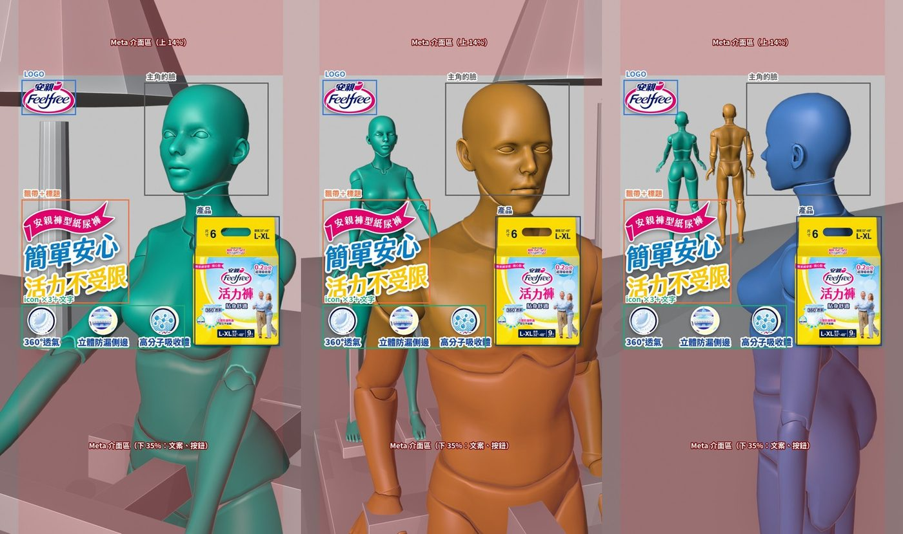

5 秒短影音 ×3
延伸 15 秒主片「阿母的客兄」的角色與場景，做三支 5 秒、無聲的直式廣告，分別對媽媽、爸爸、子女三種受眾說「簡單安心，活力不受限」。
每支都是同一個公式：一段 5 秒的生活動作，畫面上依序帶出安親 LOGO、標題飄帶、產品包裝與三個特色 icon。這一頁記錄每個階段做了什麼、用了哪些 prompt、試錯過程與檔案位置，給接手的同事看。
v2：10/27 依業務回饋調整版面。網頁版為 720p 壓縮檔，v1 與原檔見「合成與交付」。
製作流程
依序完成，每一步都先給製作人審核，通過才進下一步。點卡片可以直接跳到該階段。
三支內容
| 支 | 受眾 | 5 秒內發生什麼 | 採用的影片 |
|---|---|---|---|
| S1 媽媽 | 熟齡女性本人 | 阿嬤在公園漫步機上踩得起勁，鏡頭慢慢推近，她轉頭看鏡頭，自信又帶點得意地笑。延續 15 秒主片的結尾。 | S1_媽媽_v2 |
| S2 爸爸 | 熟齡男性本人 | 阿公和阿嬤一起踩漫步機，阿嬤在左後方自己的機台上。阿公是主角，鏡頭推近時轉頭對鏡頭咧嘴笑；阿嬤在後面笑他。阿公保留吊嘎＋高腰褲＋深藍帽。 | S2_爸爸_v2 |
| S3 子女 | 替父母採買的子女 | 爸媽挽著手在棕櫚步道上走來；鏡頭往後退、往右繞，女兒的背影從右前景入鏡，轉成側臉，手放胸口，露出放心的微笑。 | S3_子女_v3 |
接手須知
關鍵決定
- 圖文全部後製疊上：生成的畫面裡不放任何字。版位固定，三支共用同一套位置與進場時間（階段 1）。
- icon：原本的 icon 圖邊緣被裁切，改成重新生成「圓圖＋文字」一體的 B 方案，字型比照標題字卡（階段 2）。
- LOGO 右邊不放「活力褲」三個字，只放安親 LOGO。
- 10/27 業務回饋（v2）：圖文可以不受 Meta 安全區限制，比照 15 秒放在畫面下方；安親 LOGO 放大到和 15 秒一樣（高 165）；文案與 icon 大小不變。爸爸篇 3 秒左右多出一塊踏板，尾格改回「阿嬤留在後方自己的機台」後重生（S2 v4）。15 秒 End Cut 也改成同一套版面（v11）。
- 首尾格的臉一律避開圖文：模型常把臉放太低，碰到產品包裝；解法是微放大後往上裁切，而不是一直改 prompt（階段 3）。
- S3 改了腳本：從「女兒看爸媽背影」改成「爸媽走近、女兒入鏡轉側臉」，首格是爸媽中景、女兒不在畫面中（階段 3）。
- 影片由 CLI 生成：這個專案的 Kling 生成都交給 Claude Code CLI（已串 Kling MCP），用交接文件溝通（階段 4）。
檔案在哪裡
C:\Users\wayne\Desktop\ann-ching\previz\
blocking_5s\三張尾格的 Blender 白模與標註圖nano_banana_5s\每張圖一個資料夾：prompt、參考圖（圖1、圖2…）、所有結果；採用_…是定案、第N輪採用_…是被取代的舊版kling_5s\HANDOFF_Kling_5秒x3.md給 CLI 的交接文件kling_5s\input\送進 Kling 的首尾幀（1080×1920）kling_5s\output\Kling 生成的 8 條原檔；jobs.tsv生成紀錄kling_5s\final_交付\三支成片與合成腳本
還沒定案的事
- 畫質：Kling 只輸出 720p，成片是本機放大到 1080p。正式投放前建議和主片一樣過一次 Topaz 升 1080p（要用 Higgsfield 點數）。
- 產品包裝、icon 的文字是真實素材疊上的，不是生成的；但畫面裡若出現遠處招牌之類的假字，對外前仍要再看一次。
- 業務已看過 v1，v2 依 10/27 回饋修改，待再次確認。
規格與版位
三支共用一套版面：左上 LOGO、左側標題飄帶與三個 icon、右側產品包裝，人物的臉放在右上。先用 Blender 白模把三張尾格排出來、標出圖文位置，確認不擁擠後才開始生圖。
產出
- 版位表與進場時間
- 三張尾格白模（含標註圖）
工具
- Blender 5.2（沿用主片的角色 rig 與場景）
檔案
previz\blocking_5s\
previz\anqin_mom_lover_previz_v8_colorcoded.blend
交接注意
- 改版位時，首尾格的「臉部區」也要跟著改，否則臉會被擋。
Meta 安全區（1080×1920）
Reels／限時動態的介面會蓋住上下兩塊。v1 依這個規範排版；10/27 起業務確認圖文可以不受安全區限制，改成比照 15 秒放在下方，以下保留做為參考。
| 區域 | 範圍 | 規則 |
|---|---|---|
| 上方 | 0–270 px（14%） | 只放天空、樹或頭髮 |
| 下方 | 1250–1920 px（35%） | 只放身體、地面、機器 |
| 左右 | 各 65 px（6%） | 圖文不貼邊 |
圖文位置
| 元素 | x | y | 說明 |
|---|---|---|---|
| 安親 LOGO | 60–320 | 255–420 | 高 165（比照 15 秒，v1 是高 120）；右邊不放「活力褲」字樣 |
| 標題飄帶＋「簡單安心 活力不受限」 | 60–440 | 1049–1416 | 寬 380（大小不變），放在 icon 正上方 |
| 三個 icon | 88–647 | 1430–1590 | 高 160，中心 x = 150／365／580；底線對齊 15 秒的 y 1590 |
| 產品包裝 | 726–1020 | 1150–1590 | 高 440，位置比照 15 秒 |
| 人物臉部區 | — | 約 300–1000 | v2 圖文都在下方，臉放在畫面上半部即可（v1 時限制在 x 520–960、y 300–700） |
進場時間
| 秒數 | 元素 | 動態 |
|---|---|---|
| 0.2 | 安親 LOGO | 淡入，往上 24 px（0.5 秒，ease-out） |
| 0.8 | 標題飄帶 | 由左滑入 60 px（0.55 秒） |
| 1.2 | 產品包裝 | 淡入、從 90% 放大到 100%（0.6 秒） |
| 1.8／2.0／2.2 | 三個 icon | 依序彈出（ease-out-back，0.45 秒） |
| 2.4–5.0 | 全部 | 定格 |
白模尾格
在主片的 Blender 檔裡加了三台尾格攝影機（EC_M2、EC_F2、EC_D2）和第二台漫步機，排出三支的尾格並疊上圖文位置，給製作人判斷是否擁擠。之後生圖就照這個版面寫 prompt。

圖文素材
LOGO、標題飄帶、產品包裝沿用主片的素材。三個特色 icon 原圖的圓圈邊緣被裁切，所以重新生成，並一起把文字做進去。
產出
- icon ×3（透明背景 PNG，B 方案）
工具
- GPT Image 2.5（OpenRouter，透明背景、high 品質）
檔案
previz\nano_banana_5s\I1_icon360透氣\ 等 3 個資料夾
previz\seedance\final_1080p_交付\new\（LOGO、slogan、包裝）
交接注意
- 透明背景要用 GPT Image 2.5；GPT Image 2 不支援透明。
icon：A 方案 vs B 方案
A 只生圓圖，文字另外排；B 連文字一起生成，字型比照標題字卡（粗圓體、深藍字＋白邊）。製作人選 B。三個 icon 的文字確認為「360°透氣」「立體防漏側邊」「高分子吸收體」。
原始特色卡（參考圖 1）
B 方案 prompt（以 360°透氣 為例）
首尾格
每支先生一張首格、一張尾格，給 Kling 當影片的頭尾。每張圖跑 2 版，疊上圖文與 Meta 安全區檢查，挑一版給製作人審核，通過才做下一張。
產出
- 首格、尾格各 3 張（另有 S2 的雙漫步機空景）
工具
- Nano Banana Pro（Gemini 3 Pro Image），經 OpenRouter API，9:16、2K
- 參考圖：主片的角色三視表、定格，以及上一張的結果
檔案
previz\nano_banana_5s\<編號>\prompt.txt、圖1…、結果_N.png、採用_….png
交接注意
- API key 只放在本機
~\.openrouter_api_key，不要貼進對話或檔案。 - 總花費約 US$6.8（含 icon），每張約 US$0.14。
生成規則
- 參考圖照順序命名資料夾裡的參考圖叫 圖1、圖2…，prompt 用 Image 1、Image 2 指稱。三視表要寫明「ONE person」，否則模型會畫成好幾個人。
- 版位用攝影語言描述，不要給百分比在 prompt 裡寫「左 43%、37–57%」這種數字，有一次被畫成畫面上的假文字。後來改成「臉在右上方、下巴約在畫面 1/3 處」，並在結尾加一句「這是乾淨的照片，不要畫任何文字」。
- 臉太低就裁切，不要一直重生模型習慣把臉放在畫面中間，下巴會碰到產品包裝。最有效的是微放大 8–15% 後往上裁（下緣對齊），臉就整張移到產品上方。
- 首尾格要用前一張當參考尾格放首格當參考，場景、光線、服裝才會連戲。但模型也會照抄參考圖裡人物的大小和位置，要差很多時得在 prompt 裡寫「和 Image N 的差別：…兩倍大…」。
- 每張都疊圖文檢查用
review.py把 LOGO、飄帶、icon、產品與紅色安全區疊上去，左原圖、右疊圖並排比較。
Kling 影片
首尾格定案後，寫一份交接文件給 Claude Code CLI（已串 Kling MCP），由 CLI 生成並把結果放回指定資料夾，再由製作人挑版本。
產出
- 10 條 5 秒影片（每支 2 條；S3 因首格重做、S2 因尾格重做各多 2 條）
- 採用：S1 v2、S2 v4、S3 v3
設定
kling-video-v4_0首尾幀，9:16、5 秒、720p- 一次生成出 2 條，90 點（每條 45 點）
- 模型會附音軌，無法關閉，後製拿掉
檔案
previz\kling_5s\HANDOFF_Kling_5秒x3.md
previz\kling_5s\input\、output\、jobs.tsv
交接注意
- 改了首尾幀就更新交接文件最後的「更新紀錄」，輸出用新的版本號，不要覆蓋舊檔。
點數
| 支 | 生成次數 | 條數 | 點數 | 備註 |
|---|---|---|---|---|
| S1 媽媽 | 1 | 2 | 90 | 尾幀在生成前已換成漫步機版 |
| S2 爸爸 | 2 | 4 | 180 | 10/27 改尾幀重生一次（多出踏板） |
| S3 子女 | 2 | 4 | 180 | 第一次首格太遠，重做首格再生一次 |
| 合計 | 5 | 10 | 450 |
合成與交付
把選定的 Kling 影片放大到 1080×1920、拿掉聲音，再逐格疊上 LOGO、標題飄帶、產品包裝和三個 icon 的進場動態。10/27 依業務回饋改版面出 v2（S1 v2、S2 v4、S3 v3）。
產出
- 三支 5.00 秒、1080×1920、24 fps、無聲 mp4（H.264）
工具
- Python（PIL）逐格合成，ffmpeg 解碼／編碼
- 放大：lanczos＋輕度銳化
檔案
previz\kling_5s\final_交付\v2_1027\（v2）
previz\kling_5s\final_交付\（v1）
交接注意
- 改時間軸或換版本，改
v2_1027\5秒合成腳本_comp5s_v2.py（版面在layout2.py）重跑即可。
成片
v2 版面：LOGO 放大、文案與 icon 移到下方。逐格抽查過，三支主角的臉全程沒有被圖文擋到；爸爸篇 2–4 秒阿嬤腳下只有兩塊踏板。
v1（10/21，Meta 安全區版面）
交付檔案
重跑方式：python comp5s.py <Kling 原檔> <輸出.mp4>。腳本裡的素材路徑寫的是雲端工作區的路徑，在本機跑要先改成 previz\seedance\final_1080p_交付\new\ 與 previz\nano_banana_5s\。